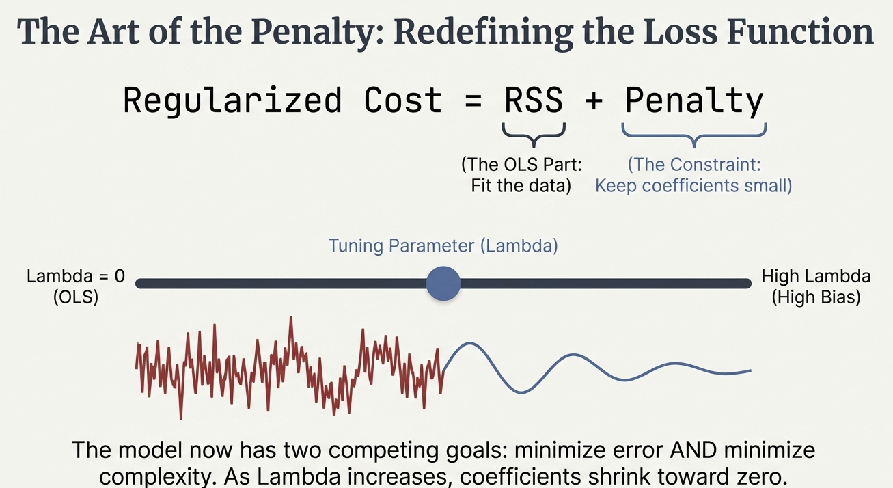
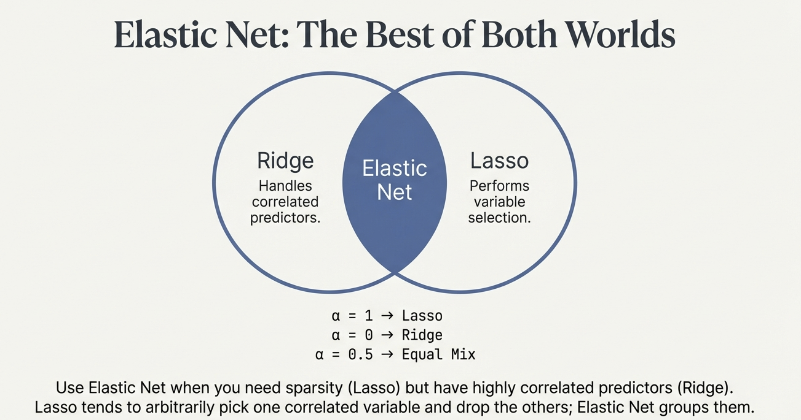
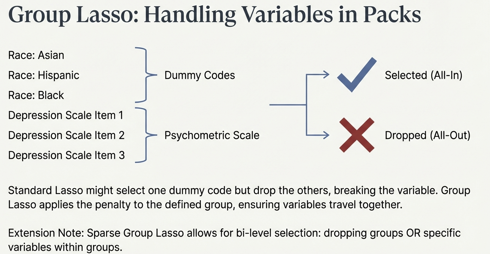

An Introduction to Regularization Methods
Introduction
Section 1: The Problem with “Best Fit”
Changing Landscape of Data
- Traditional Research: Small \(N\) (participants), Small \(p\) (variables).
- Focus: Theory-driven hypothesis testing.
- The New Reality: “Wide” Data: Log-trace data, dense surveys, genomic markers.
- High-Dimensional Prediction: \(p\) is large relative to \(N\).
- The Consequence: Traditional methods like OLS struggle to distinguish signal from noise.
The Status Quo: Ordinary Least Squares (OLS)
- The Gold Standard: OLS is designed for inference in large samples with few predictors.
- The Objective: Unbiased estimates with minimum standard error.
- The Mechanism: Minimizes the Residual Sum of Squares (RSS).
- It tries to pass a line strictly through the “center” of the data points.
The OLS Trap in High Dimensions
- Capitalizing on Chance: When predictors (\(p\)) are many, OLS finds spurious relationships by chance.
- Overfitting: The model “memorizes” the training data rather than learning the underlying pattern.
- The Symptom: Excellent fit on current data (\(R^2\) is high).
- Poor performance on new data (Prediction fails).
Visualizing the Problem

- Left: OLS works well with sparse data.
- Right: As dimensions expand, the connections become too complex for simple minimization.
The Goal: Generalizability
- Shift in Perspective: Moving from “Is this coefficient significant?” to “Does this model generalize?”.
- The Trade-off: To improve prediction on future data, we must accept some error on current data.
- The Solution: We need a mathematical way to constrain the model—to stop it from chasing noise.
Concept
Section 2: The Solution - Regularization
The Bias-Variance Trade-off
- Bias: Error from erroneous assumptions (e.g., missing a relationship).
- Variance: Error from sensitivity to small fluctuations in the training set.
- The Conflict: OLS = Low Bias, High Variance.
- Regularization = Higher Bias, Low Variance.

Introducing “Bias” Intentionally
- Why Add Bias? By restricting the model, we stabilize the estimates.
- We prevent the model from reacting to random noise.
- The Result: A model that is slightly “wrong” on average (biased) but consistently closer to the truth (low variance) across different samples.
The Math: Redefining the Cost Function
\[\text{Regularized Cost} = \text{[RSS] or [-LL]} + \text{Penalty}\]
- RSS: The standard OLS term (Fit the data).
- Penalty: The constraint term (Keep coefficients small).
- The Mechanism: The model must “pay” a price for every coefficient it estimates.
The Specifics: Linear Models with OLS
The least squares cost function:
\[\text{RSS} = \sum_{p=1}^{N}\left(Y_p - \left(\beta_0 + \sum_{i=1}^{p} \beta_i X_{ip}\right)\right)^2\]
The Specifics: Generalized Linear Models with Maximum Likelihood
The ML likelihood function:
\[\text{LL} = \sum_{p=1}^{N} \log P(Y_p | X_p, \boldsymbol{\beta})\]
- Here, \(P(Y_p | X_p, \boldsymbol{\beta})\) is the PDF of the outcome
The Cost Function
\[\text{Regularized Cost} = \text{[RSS] or [-LL]} + \text{Penalty}\]
- Penalty: A function of the coefficients (\(\beta\)s) that increases as coefficients grow.
- Types of Penalties:
- Ridge Regression: \(\lambda \sum_{i=1}^{P} \beta_i^2\) (L2 norm)
- LASSO: \(\lambda \sum_{i=1}^{P} |\beta_i|\) (L1 norm)
- Elastic Net: \(\lambda \left(\alpha \sum_{i=1}^{P} |\beta_i| + (1-\alpha) \sum_{i=1}^{P} \beta_i^2\right)\)
NOTE: \(\lambda\) and \(\alpha\) are set by the user (and typically ranges of \(\lambda\) are tested)
- The Goal: Minimize the Regularized Cost by choosing optimal \(\beta\)s.
The Tuning Parameter: Lambda (\(\lambda\))
- Lambda (\(\lambda\)): Controls the strength of the penalty.
- \(\lambda = 0\): No penalty. The result is identical to OLS.
- High \(\lambda\): Strong penalty. Coefficients are shrunken heavily toward zero (High Bias).
- The Goal: Find the “Goldilocks” \(\lambda\)—not too simple, not too complex.

Techniques
Section 3: Ridge Regression
Ridge Regression (\(L_2\) Penalty)
- The Formula: Adds the sum of squared coefficients to the cost function. \[\dots + \lambda \sum \beta^2\]
- Behavior: Shrinks coefficients toward zero but rarely sets them exactly to zero.
- “Democratic” shrinkage: It reduces the impact of all variables proportionally.
Geometric Intuition: The Circle
- Constraint Region: \(\sum \beta^2\) creates a circular constraint.
- The Result: The solution touches the circle but rarely hits the axis (zero) exactly.

When to Use Ridge?
- Best Use Case: High Multicollinearity.
- Example: Multiple survey items measuring the same construct.
- Handling Correlation: OLS would produce unstable estimates with huge standard errors.
- Ridge shares the credit among correlated predictors, shrinking them together.
Techniques
Section 4: LASSO Regression
LASSO Regression (\(L_1\) Penalty)
- The Formula: Adds the sum of absolute coefficients to the cost function. \[\dots + \lambda \sum |\beta|\]
- Behavior: * Forces coefficients exactly to zero.
- Performs Variable Selection automatically.
Geometric Intuition: The Diamond
- Constraint Region: \(\sum |\beta|\) creates a diamond-shaped constraint.
- The Result: The corners of the diamond hit the axes.
- Hitting an axis means the coefficient for that variable becomes zero.

The “Bet on Sparsity”
- Assumption: The underlying truth is “sparse”—only a few variables truly matter.
- Reality in Social Science: Data is often dense (everything correlates with everything).
- Functional Sparsity: We prioritize a parsimonious model we can actually interpret.
Example: Personality Data
- Context: Predicting an outcome using Big Five personality items (\(p=25\)) + Education.
- Result: LASSO sets nearly half the predictors to zero.
- Benefit: Filters the signal from the noise, leaving a cleaner model.

Implementation
Section 5: Practical Application
Prerequisite: Standardization
- The Problem: The penalty is uniform. Large-scale variables (Income) have small coefficients; Small-scale variables (GPA) have large coefficients.
- The Consequence: Without scaling, the penalty unfairly crushes variables with small natural scales.
- The Fix: Standardize (Center and Scale) all predictors to Mean=0, SD=1. Categorical variables must be dummy coded before standardization.

Choosing Lambda: Cross-Validation
- Process:
- Split data into folds (e.g., 10-fold CV).
- Test a sequence of \(\lambda\) values.
- Calculate Mean Squared Error (MSE) for each \(\lambda\).
- Visualization: The “CV Path” shows error changing as complexity changes.

The “One Standard Error Rule”
- Min MSE: The \(\lambda\) value that minimizes error mathematically.
- 1SE Rule: Select the most parsimonious model (higher \(\lambda\)) whose error is within 1 Standard Error of the minimum.
- Why? Err on the side of simplicity. If a simpler model is statistically indistinguishable from the complex one, pick the simple one.

Advanced Methods
Section 6: Extensions
Elastic Net: Best of Both Worlds
- The Limitation of LASSO: If variables are highly correlated, LASSO picks one arbitrarily and drops the rest.
- The Solution: Elastic Net mixes L1 (Lasso) and L2 (Ridge) penalties.
- \(\alpha\) parameter controls the mix (\(\alpha=0.5\) is equal mix).
- Outcome: Performs selection (Lasso) but keeps correlated groups together (Ridge).

Stability Selection
- The Problem: Variable selection can be unstable. Changing the data split slightly changes which variables are picked.
- The Fix:
- Subsample data 1,000 times.
- Run selection on each subsample.
- Keep variables with high Selection Probability.

Hierarchical LASSO: Interactions
- Context: Testing moderation (e.g., Treatment \(\times\) Prior Knowledge).
- Challenge: With many predictors, checking all interactions is impossible manually.
- Solution: Hierarchical LASSO automates interaction search.
- Strong Hierarchy: An interaction is only “unlocked” if its main effects are also selected.

Group LASSO
- Context: Categorical variables (e.g., Race/Ethnicity dummy codes) or psychometric scales.
- Problem: Standard LASSO might drop “Hispanic” but keep “Asian,” breaking the variable structure.
- Solution: Applies penalty to the Group of variables. They are either all included or all dropped.

Conclusion: A New Standard
- Embrace Complexity: Regularization allows us to analyze high-dimensional data without being fooled by it.
- Filter Signal from Noise: It provides a principled way to reduce complex data to interpretable models.
- The Future: Moving towards robust, generalizable prediction in the Learning Sciences.